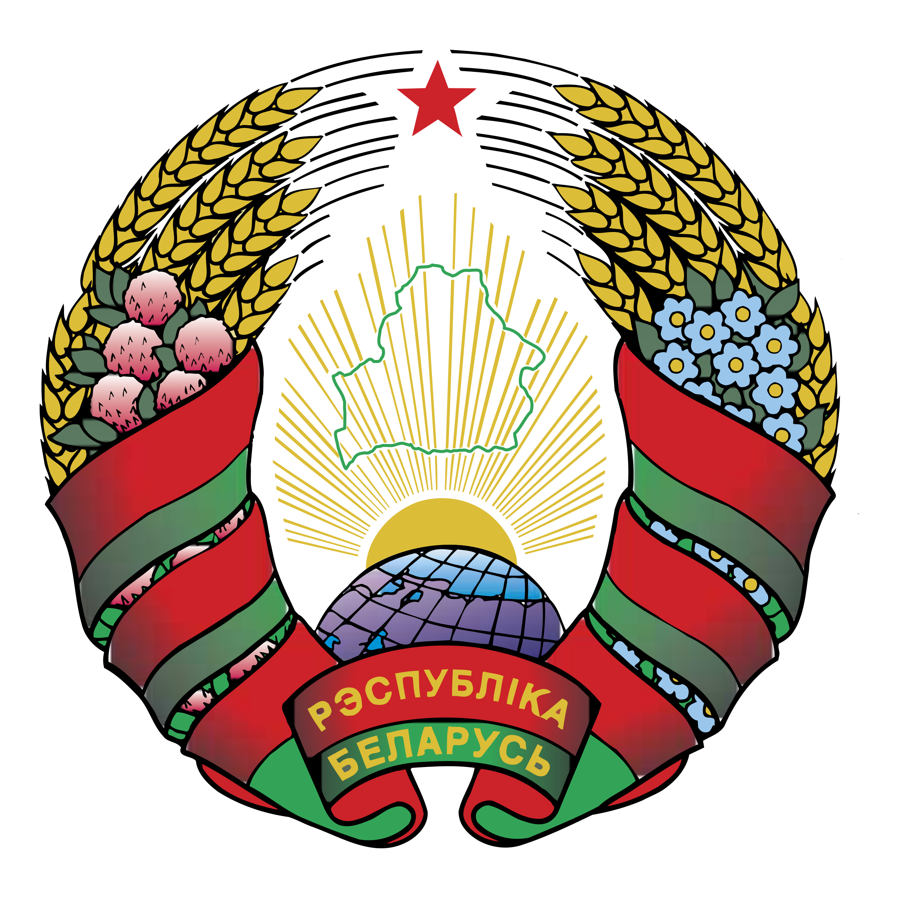

Добро пожаловать в Могилёвскую область!
Географическая информация
Могилевская область – самый восточный регион Беларуси, пограничный с
Российской Федерацией. Восточные соседи региона – Смоленская и Брянская
области России. На севере область граничит с Витебской, на западе – с
Минской, а на юге – с Гомельской областями. Леса занимают около 41%
территории области.1 млн 23,0 тыс. человек проживают в Могилевской
области (на 1 января 2020 г.) 75,79% населения живут в городах 88,7%
населения составляют белорусы В области исповедуют 17 религий. Основной
является православие.В состав области входят 21 район, 15 городов, в том
числе два города областного подчинения – Могилев и Бобруйск, 8 поселков
городского типа, 155 сельских Советов с 2985 сельскими населенными
пунктами.



Промышленность
Могилев является современным крупным промышленным центром Республики
Беларусь. Основу промышленного комплекса формируют предприятия,
осуществляющие производство химических продуктов, продуктов питания,
машин и оборудования, текстильных изделий, строительных материалов.
Выгодное географическое положение и наличие крупнейшего промышленного
потенциала Республики создали неограниченные возможности для
плодотворного сотрудничества с партнерами по кооперации как внутри
страны, так и за рубежом. Около 4% всей промышленной продукции
Республики приходится на промышленный комплекс города Могилева. Удельный
вес города в объеме промышленного производства Могилевской области
составляет 45,6%, Промышленность города представлена 57 крупными
промышленными предприятиями.


Как появилась Могилёвская область?
Заселение территории области началось еще в среднем палеолите (100-40
тыс. лет назад) неандертальцами (Homo neanderthalensis), о чем
свидетельствует их хозяйственная деятельность около деревни Обидовичи
Быховского района. Позднее в период верхнего палеолита (40-14 тыс. лет
назад) здесь проживали предки современного человека Homo sapiens
(кроманьонцы). В 8-9 веках территорию Могилевской области заселяют
славянские племена дреговичей, радимичей и кривичей, которые основали
первые города и заложили основы государственности. Самыми древними
городами Могилевской области являются Мстиславль (основан в 1135 году),
Пропойск (ныне Славгород) и Кричев - оба известны с 1136 года. Годом
основания Могилева, согласно сообщению Могилевской хроники, принято
считать 1267 год, когда был заложен замок у излучины Днепра. В первой
половине XVI века Могилев был самым крупным городом белорусского
Поднепровья. К началу XVII века стал одним из крупнейших
ремесленно-торговых центров Беларуси, а к середине столетия - и всего
Великого княжества Литовского. В 1772 году в результате первого раздела
Речи Посполитой Могилев был включен в состав Российской империи. За свою
историю могилевские земли не раз становились местом боевых действий, в
том числе во времена Ливонской войны, Северной войны, войны с Наполеоном
1812 года, Первой мировой войны и Великой Отечественной войны. После
аварии на Чернобыльской АЭС в 1986 году часть территории Могилевской
области (преимущественно на юге) подверглась существенному
радиоактивному загрязнению. Однако благодаря последовательной
реабилитации и политике восстановления земель Могилевщина сегодня
представляет собой хорошо развитый и привлекательный регион.

Интерестные факты
Могилевская область – одна из самых маленьких в республике по площади.
Уступает последнее место лишь Гродненщине.
Могилевскую землю еще называют “краем животворных криниц”. Неспроста.
Ведь в ее недрах сосредоточены крупнейшие в Беларуси запасы минеральной
и питьевой воды.
Регион располагает одними из крупнейших в Европе запасами сырья для
производства цемента.
Более трети Могилевской области покрыто лесом.